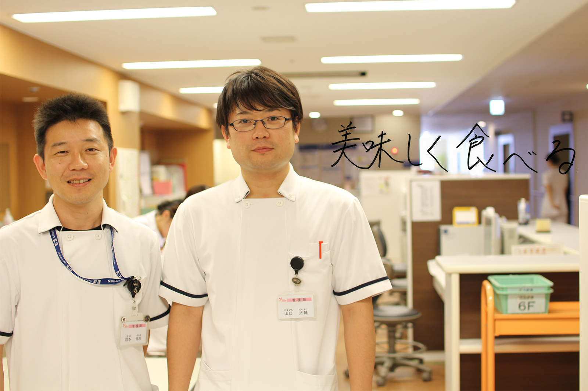
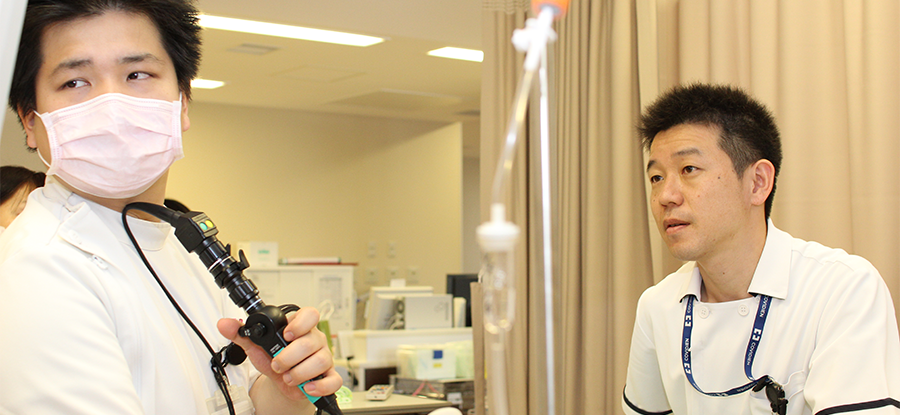

看護部
Nurse【摂食・嚥下障害看護認定看護師】
 もどる
もどる


■摂食・嚥下障害看護認定看護師の活動
多職種で介入するサポート体制
現在、高齢化が急激に進み高齢者の入院患者さんが増えています。高齢者の特徴として加齢に伴う全身機能低下がありますが、全身機能と共に嚥下機能も低下していきます。嚥下障害を引き起こす疾患は様々ありますが、代表的な疾患では脳神経疾患があげられます。
このように何らかの原因で嚥下障害を発症すると誤嚥が原因での呼吸器感染症や、経口から十分な栄養を摂取することができなくなることで、低栄養状態となり原疾患の回復過程にも大きく影響を及ぼしてきます。そのため、患者さんの全体像を捉え何が必要か考え介入することが必要となります。嚥下障害の患者さんに対して、当院では嚥下障害に関わる職種でチームを構成し専門的な介入を行っています。
■摂食・嚥下障害看護認定看護師を目指した理由
看護師の視点から介入する摂食嚥下障害
私達は嚥下障害患者さんへの対応では急性期からの介入が、患者さんの予後に大きく影響を及ぼすと考えています。しかし、院内では嚥下障害に関する看護の普及は進んでおらず、必要な時に実施できる評価技術や訓練、そして組織づくりが構築されていない状況でした。そこで、チームアプローチの要となれる看護師として、専門的な知識と技術を習得し、摂食嚥下障害看護に取り組む必要性を伝達しなければならないこと。そして、その活動が患者さんの「食べたい」を支える看護に繋がることを目的として認定看護師を目指しました。